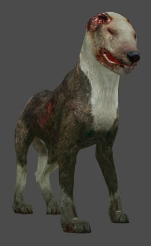
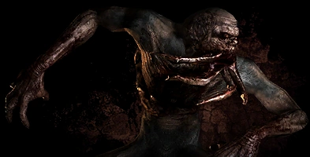
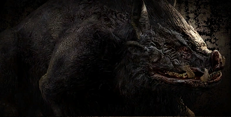

|
|
All rights reserved, you can watch calmly
NavigationСлепой пёсСлепой пес Лабораторные исследования в области селекции включали эксперименты с генетическим материалом породистых собак. Предполагалось, что новый вид собаки можно будет более эффективно использовать для охраны периметра Зоны. Известно, что искусственно выведенные породы не так приспособлены к противостоянию внешним факторам, как их дикие сородичи. Задачей экспериментаторов было показать степень влияния «диких» генов на приспособленность к внешним природным и антропогенным факторам. Было решено заменить некоторые участки хромосом современных пород собак высоко гомологичными участками диких видов. В результате таких манипуляций трансгенные собаки зоны приобрели несколько изменённые свойства от диких собак. Иными словами, их искусственно приблизили к дикому состоянию. После катастрофы некоторые лабораторные образцы покинули лабораторию и в Зоне стали скрещиваться с мутантными одичавшими родственниками. Соответственно, их потомки приобрели новые свойства. Вот и получился такой себе «генетический коктейль». В итоге, со времён первой катастрофы в собачьем роду сменилось уже более семи поколений, и в каждом из них всё более наблюдалось влияние Зоны. Благодаря огромному разнообразию исходного генетического материала собаки Зоны суперприспособлены, так как имеют в своём геноме множество «спящих генов» и просто нейтральных мутаций, которые при изменении условий могут проявиться как позитивные. Неудивительно, что естественный отбор прошли только конкурентоспособные особи, поэтому в Зоне, на сегодняшний день, можно обнаружить весьма хищных представителей собачьих. В результате, за десять с лишним лет обычные собаки вскоре выродились здесь полностью, уступив место новому виду — слепым псам. С изменением гормонального баланса, ферментативного состава, вернее, структуры функциональных доменов и ферментов, наблюдались изменения в опорно-двигательном аппарате, физиологии сенсорной системы, а также и в других системах. Участки генома, кодирующие и контролирующие развитие и функциональную активность опорно-двигательного аппарата, вероятно, наиболее филогенетически близкие к таковым у диких представителей собачьего племени Африки, — гиен[1], — отличительной чертой которых является грубое строение скелета и исключительно мощные челюсти — самые сильные в природе. Также физиологически собаки Зоны очень активны, их метаболизм несколько ускорен, температура тела повышена и активность всех систем также повышена. Изменение в интеллектуальном развитии стало результатом увеличения сроков эмбрионального развития, а также включения в их геном генов от их аборигенных сородичей из Зоны. Почти все существа Зоны обладают телепатическими свойствами, развитыми в той или иной степени. Мутации и эволюционная адаптация привели к усилению особых прежде слабо выраженных собачьих способностей и чувств, причём зачастую в ущерб привычным. Основные физиологические изменения коснулись зрения — для собак оно постепенно теряло необходимость как чувство, поскольку в Зоне они больше доверяют другим способам оценки внешних условий, другим системам восприятия обстановки, и в итоге оказалось почти бесполезным после стремительного эволюционного усиления чутья: например, слепые щенки выживали в Зоне не хуже, а то и лучше своих зрячих собратьев, и чаще всего переживали их. Данные животные прекрасно распознают и обходят аномалии, радиацию и другие невидимые опасности, которыми кишит Зона. Наряду с почти утраченной зрительной функцией, слух, обоняние, а также шестое чувство, пока ещё малопонятной природы, делают собак Зоны очень опасными противниками. Характерной чертой для созданий в Зоне есть наличие группового интеллекта. Присутствует он и у собак — действуя стаей, слажено, они достигают большего успеха, чем поодиночке. И в момент атаки или опасности общее на всю стаю психофизическое поле генерируется всеми членами «команды», причём наблюдается чёткая корреляция между численностью стаи и силой поля. Такая особенность (поле) не требует лидера в стае, так как все особи участвуют в его генерации и характер его зависит от эмоционального состояния всей стаи. Как и их предки, слепые псы охотятся стаями; встреча с большой группой этих существ означает серьёзную опасность, поскольку, напав, они могут разорвать даже хорошо вооружённого сталкера.  КровососПолулегендарный мутант, встречающийся ближе к центру Зоны в различных подземельях и заброшенных местах. Известен своими способностями к полному высасыванию жидкого содержимого жертвы и становления невидимым. Матёрые сталкеры описывают его как высокого сутулого гуманоида со множеством щупалец на месте рта. По их словам, с помощью щупалец данное существо питается: впиваясь ими в шею живой жертвы, оно парализует свою добычу и высасывает её кровь; после такой процедуры от человека остаётся лишь высохшая, напоминающая мумию оболочка. Судя по всему, именно они ответственны за смерть огромного количества людей в Зоне. Возможно, именно из-за своей хитрости и опасности, о них так мало знают, потому что немногие очевидцы оставались в живых. Кровососы иммунны к радиации. Достаточно умны, что подтверждается их тактикой нападения, и не поддаются воздействию контролёра.  КабанКрупный (высота в холке 1,3-1,4 м) агрессивный зверь, достигающий полутора метров в холке. Своей живучестью и агрессивностью данное животное превосходит своих родственников вне Зоны и не уступает большинству мутантов — результат адаптации к жёстким условиям обитания. После катастрофы кабаны выжили, но это далось им не легко — большей частью они вымерли. У оставшихся животных прошли сильные мутагенные процессы, обусловленные воздействием радиации и аномалий и в значительной степени сказавшиеся на облике этих млекопитающих: местами последние облысели, а местами, наоборот, обросли очень длинной жёсткой шерстью. Копыта зверей гипертрофировались, изменили свою форму и стали более острыми, приобретя некоторое сходство с когтями; зрачки обесцветились и глаза стали белёсыми, на облысевшей голове проявились пигментационные пятна и глубокие морщины. Вместе с тем у кабанов изменилась форма морды и выросла дополнительная пара ушей, которые по размеру значительно меньше «родных» и находятся немного ниже. Могут заразить бешенством. Кабаны Зоны хорошо переносят радиацию, что позволяет им подолгу находиться на сильно загрязнённых территориях, но всё ещё уязвимы к аномальным воздействиям. Обычно эти животные атакуют с разбега, развивая большую скорость и пытаясь клыками распороть живот или ноги жертвы или сбить её с ног. При такой атаке сносят любые препятствия.[1] При сильном заносе после разбега разворачиваются прыжком на месте. В ближнем бою атакуют копытами быстро и резко. Имеют хорошую устойчивость к пулевым ранениям, но уязвимы для выстрелов дробью. Плохо взбираются на возвышения. Агрессивность кабанов обуславливается тем, что они впадают в бешенство, но неизвестно: делают они это осознанно или на уровне инстинктов, хотя поведение вожаков указывает на причастность именно инстинктов. 

|